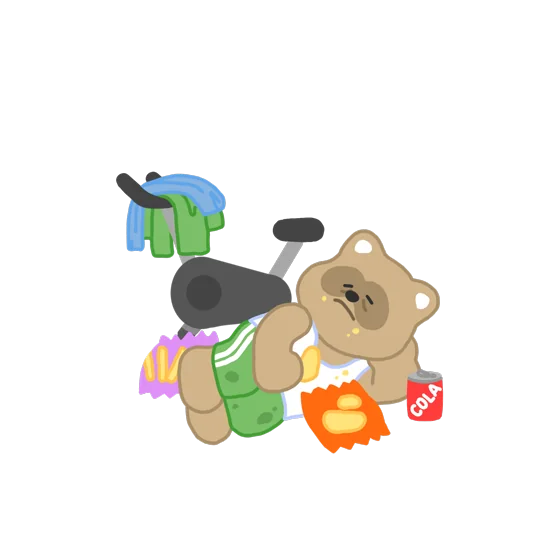

좌우로 밀면 도감이 넘어가요
A 에너지 수준
R 건강관리 방식
I 영양 패턴
T 스트레스 대응
남은 유형 16

SRIT에너지 충전이 필요한, 섬세한 감성파
예시로 놓아둔 다섯 칸이에요. 실제 항목은 설문 결과에 따라 달라져요.
HBTI는 하루두알이 만든 건강행동유형 지표예요. 성격 유형 검사가 아니에요.
하루두알은 의료기기가 아니고, 질병의 진단이나 치료를 목적으로 하지 않아요.
건강 상태에 대한 판단이 필요하면 의료진과 상담해 주세요.
주식회사 하루두알 · 대표 이승원 · 사업자등록번호 326-86-03655 ·
통신판매업 제2026-화성동탄-2414호 · 경기도 화성시 동탄구 메타폴리스로 42, 9층 902-S12호 ·
031-299-6163 · support@harudooal.com ·
개인정보처리방침
건강 습관에도
유형이 있어요
48문항 5~7분이면 16가지 건강행동유형 가운데 내 유형이 나와요.
정보는 늘었는데,
순서는 아무도 안 알려줘요
검진 수치, 걸음과 수면 기록, 사둔 영양제. 무엇부터 손대야 하는지가 늘 빠져 있어요.
네 가지 축이 정해지면
열여섯이 하나가 돼요
에너지 수준, 건강관리 방식, 영양 패턴, 스트레스 대응. 설문 한 번이면 충분해요.
열여섯 중 한 장,
당신의 카드예요
리포트에는 유형 설명과 함께, 챙겨볼 만한 영양소 다섯 가지가 우선순위로 담겨요.
28칸이 차는 동안
변화가 기록돼요
4주 프로젝트는 하루 한 칸이에요. 복용 체크와 수면·활동 기록이 쌓이면, 재측정에서 무엇이 달라졌는지 볼 수 있어요.